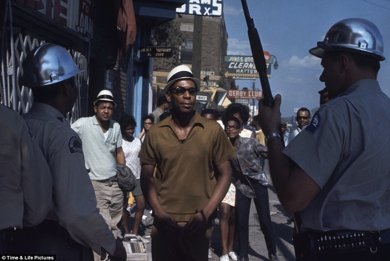

In direct response to the violent Detroit rebellion of 1967 , Michigan governor George Romney, Detroit mayor Jerome Cavanagh, and department store president Joseph L. Hudson, Jr. found a coalition of business, civic, labor, and community leaders originally called the New Detroit Committee in an attempt to identify and ameliorate the causes of the urban crisis.
"The broad purpose of New Detroit, Inc.," according to a program proposal from 1972, "is to address itself to the problems of the disadvantaged and alienated people in this urban area…It seeks to resolve these problems by bringing about desirable and necessary social change and by supporting and encouraging initiative arising in the black community."5
New Detroit remains an active force in the city to this day, its mission to improve race relations and advance social and economic equity pursued through a variety of programs and events .
The scope of New Detroit's efforts in its early days is staggering. Committee members work on issues in education, employment, health, housing, youth development, economic development, public safety, justice, business development, community services, drug abuse, and art.
Why art?
A 1972 New Detroit Policy Statement on Black Culture explains:
To some, the proposal seems strange the a high priority should be given to culture at a time when the struggle to provide the bare survival needs of inner city residents such as housing and jobs is acute. The struggle in which our city is engaged today is a struggle to create a community which enables all of its residents to lead rewarding and meaningful lives. Such an effort must include concern for those experiences which give to the individual a sense of orientation to life and of his unique value in his society. This is the special role of what we call culture.
New Detroit takes the following position with respect to the support of efforts designed to broaden contact and understanding across racial and economic lines.
It believes that while some issues can be resolved through direction confrontation, many conflicts can be more effectively reduced through voluntary participation by persons of differing social and economic backgrounds in shared experiences which enrich all the participants.
It also believes that the arts - drama, painting, music - provide one of the important avenues for positive communication among persons of many differing backgrounds.5
See 1973 and LIVING WITH ART .